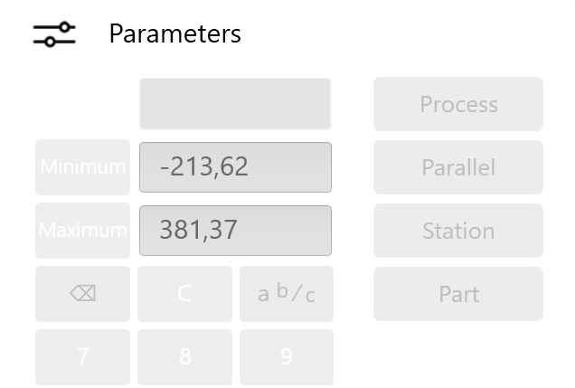

Nabídky, dialogy a funkce jsou téměř stále označeny symboly. Tato koncepce usnadňuje intuitivní ovládání programu a poskytuje přehledné uživatelské rozhraní.
Info: Při zobrazování a skrývání dialogů se dynamicky přizpůsobí velikost zobrazení na rozhraní. Tak mohou být zobrazeny dodatečné dialogy bez toho, že by byly zakryty stávající náhledy.
Symboly v řádku záhlaví se vyvolají všechny oblasti a moduly programu (See «Prvky v řádku záhlaví»).
Výběrem textové oblasti (A) v řádku záhlaví se zobrazí dodatečné položky nabídky. Jakmile již není zvoleno žádné tlačítko, budou tyto položky nabídky zase skryty.

Vyberete-li funkci Zpracovat technologii, na levé straně obrazovky se zobrazí panel nabídek s tlačítky jednotlivých nabídek Technologie.

Okno s náhledem obsahuje hlavní náhled a podle zvolené funkce i dodatečné dialogy. V dialozích jsou podle nabídky zobrazeny procesy ohýbání i náhledy k procesu ohýbání a plánu stanice.

V panelu funkcí se mohou příslušnými tlačítky spouštět činnosti nebo volit funkce pro příslušný náhled. Nejsou-li v aktuálním náhledu funkce k dispozici, tak se panel funkcí nezobrazuje.

V seznamu hlášení se všechna hlášení zobrazí s příslušným stavem a původem.

Tyto dialogy se automaticky zobrazí na rozhraní zprava doleva. Přitom se skryje původní dialog. Kliknutím do řádku záhlaví dialogu (A) se tento dialog zase skryje a opět se zobrazí předcházející dialog.

K přehlednému zobrazení různých oblastí v softwaru se používají registry. Aktuální dialogy se zobrazí kliknutím na příslušný registr. Každý registr je označen určitým symbolem nebo textem (A).

S tímto dialogem klávesnice mohou být do pole zaznamenány volně definovatelné hodnoty. Dialog se zobrazí po vybrání pole s volně definovatelnými hodnotami.

S tímto dialogem mohou být do pole zaznamenány numerické hodnoty. Dialog se zobrazí po vybrání pole s numerickými hodnotami.

S tímto dialogem mohou být do pole zaznamenány zadané hodnoty. Dialog se zobrazí po vybrání pole s předem definovanými hodnotami.